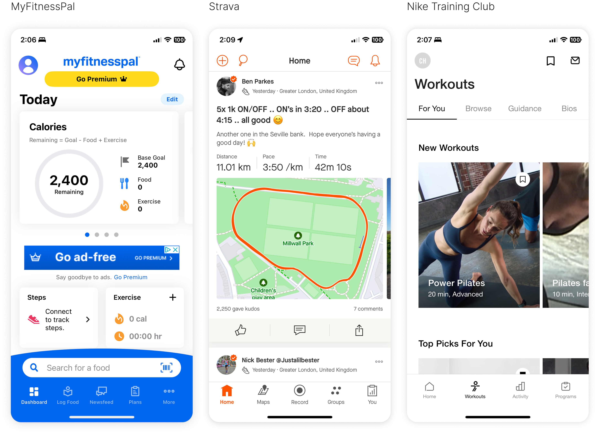
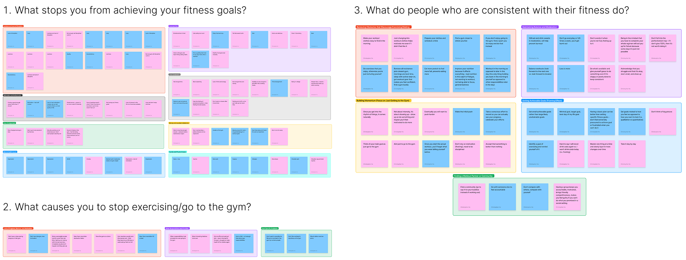
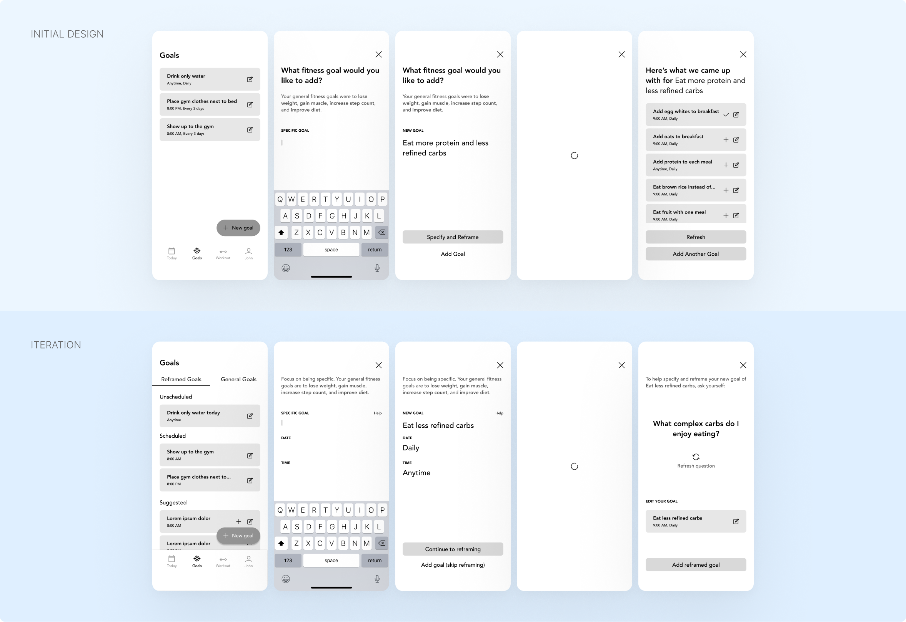

Brief
Reframe is a fitness app that leverages the framing effect to positively
shape the perception of fitness goals and workout routines, making them
feel more attainable. It aims to improve accountability and increase
motivation for people struggling to achieve and sustain their fitness
goals.
Personal Anecdote
Depending on whether I was on summer break or in school, my lifestyle
alternated between consistent exercise, healthy eating, and sufficient
sleep, and phases where the opposite was true. My motivation and
discipline always decreased with the demands of school, leading me to
stop exercising at all. However, I noticed that as long as I pushed
myself to JUST get to the gym, I completed my workout, regardless of how
I initially felt.

Problem
Struggling with achieving and sustaining fitness goals is a well-known
and widespread problem for many people. As someone personally
experiencing the struggle, I checked what the stats really said:
43% of people give up on their fitness goals within one month of making
them
Other Relevant Statistics
-
31% admit to feeling anxious when thinking about trying to get into
shape overall
-
48% feel intimidated by the number of fitness workouts and classes
out there
-
49% plan on using a fitness app for assistance in sticking to their
resolutions
Competitive Analysis
Half of the individuals struggling with fitness planned on using an app
to help them, so it was important to figure out what the top fitness
apps were doing. I reviewed the most popular app, MyFitnessPal, as well
as Strava and Nike Training Club.

While their specific features vary, the overarching theme among these
apps is to asssist users on their fitness journey with quantitative
tools and information. They also integrate qualitative aspects like goal
setting, community engagement, and motivational content, but their
primary use is for tracking and analyzing data and metrics.
MyFitnessPal — Tracking and
analyzing calorie intake, macronutrient breakdowns, exercise calories,
and bodyweight
Strava
— Tracking and analyzing running and cycling metrics (distance, speed,
elevation, and heart rate), with an emphasis on communities and
socializing
Nike Training Club — Providing
workout plans and training sessions for various fitness levels, as
well as tracking workout metrics (duration, intensity, and completion)
Key Question
Given the oversaturation of the fitness apps on the market and the
popularity of quantitiatve tracking tools, my goal was to find an
opportunity area that would differentiate my solution from the rest.
Research
To better understand why people fail to achieve or stay consistent with
their fitness goals, I conducted user interviews with 5 participants,
ranging from students and young working adults who have been putting off
or taken a pause on their fitness journey. I also conducted secondary
research on what consistent people do and grouped the data into affinity
maps.

Beginners don't know where or how to start when creating fitness goals
and fixing their diet
Perfectionism is an obstacle to starting a fitness journey—only
working out if they can find the "perfect" routine or if they have
enough time to complete the entire routine
The expectation to be "Instagram model fit" right away creates a surge
of initial motivation (training 5 to 6 days a week and using quick fix
diets) that always leads to burnout
Fit people stay consistent by just showing up and doing something,
doing exercises they actually enjoy, having a balanced schedule, and
setting small achievable goals vs. large unattainble goals
Opportunity Area
Taking all the competitor and user research into account, I noticed
fitness apps weren't tackling the mental aspect of the fitness journey.
The hardest part of fitness is starting and gym newbies were setting
themselves up for failure by creating mental obstacles they weren't even
aware of themselves. On the other hand, fit people suceeded by having a
different frame of mind regarding going to the gym and fitness in
general.

Designing the App
After identifying the opportunity area:
leveraging the framing effect to positively shape the perception of
fitness goals and workout routines, I identified key features that I needed to design.
Key Features
-
A way to explain to users the concept of "reframing" fitness goals
and workouts
-
A way for users to create a new goal with or without reframing
assistance
-
A way for users to view and check off their goals of the day
-
A way for users to receive tailored workouts that are easy to follow
I started off designing low-fidelity wireframes and conducted three
rounds of usability testing to figure out what worked and what didn't,
and iterated accordingly.
Goals (Guided Tour)
On first use, users would have to be introduced to the concept of
reframing fitness goals. This started off as more of a quickstart guide
— users would start at Today and be prompted to head to Goals to start
the process of reframing their general fitness goals they selected
during onboarding. Screens with expository text would explain reframing
and the user would then receive suggested reframed goals that they could
choose to add.

After testing, it was quickly evident that there was an overwhelming
amount of expository text that was likely to be skipped over. Users were
also confused about the suggested goals — it was assumed they were
automatically added and that they didn't need to manually do it
themselves. Also, the suggested goals weren't tailored enough, so users
didn't feel personally motivated in achieving them. This led to using a
guided tour with reduced expository text instead. It was also important
to provide examples of specified and reframed goals, so that we could
help users figure out how to improve their goals on their own — creating
a more personal connection and greater motivation in achieving them.
Goals (New Goal)
After becoming familiar with the concept of reframing goals, users would
need the option to add goals they reframed on their own or seek
assistance in creating reframed goals. The initial design had users
input a new goal and receive suggestions for reframed goals.

Once again, testing indicated that providing generated goal suggestions
was not properly tailored or engaging at all for users. It was better
for users to come up with a reframed goal on their own (with some
assistance) — doing so made them feel personally invested in actually
working toward and achieving said goal. This led to asking users a
question(s) based on their inputted goal, that could help them figure
out how to reframe their goal on their own.
Workout (Start a Workout)
Struggling to find the "perfect" workout routine was a pain point for
users, so the design needed to emphasize the notion that there's no such
thing as a perfect routine and doing something is always better than
doing nothing. This was the reasoning for the expository text presented
on first use. The initial design of the tailored workout asked users
which muscle group and isolated muscle they wanted to work on. After
choosing, three exercise targets would be provided — ideally users would
complete every target, but if they weren't feeling it, atleast they did
something (minimum target).
Similar to the Goals quickstart guide, testing indicated that the
expository text was too overwhelming and likely to be skipped over.
Users also found having to choose which muscle group and exercise to
work on was confusing and intimidating — not everyone was familar with
fitness jargon and having to choose often led to overthinking and
created another obstacle to motivation.
The design needed to make the fitness journey as simple and stress-free
as possible. I made the decision to remove the expository screens and
opted for a brief pop-up dialog instead. Tailored workouts removed any
user selection (besides selecting an exercise based on available
equipment) to prevent users from becoming overwhelmed. I also made the
ideal and best exercise targets become visible only when the user had
completed the minimum target to keep the user focused on their immediate
task at hand.
Final Design
After iterating based on insights from testing, I created a
high-fidelity design and design system.

Next Steps
Many of the design changes made during iterations were based on insights
gathered from testing with users from one age bracket (19-32 years). An
appropriate next step would be to test the design and validate the user
experience choices with older age brackets to see how I could tailor the
experience differently. It would also be useful to explore having a
mascot, similar to Duolingo's owl Duo. Having an approachable character
could enhance the user experience by offering encouragement and
guidance, and fostering motivation as users progress through their
fitness journey.
Lessons Learned
Working on Reframe taught me a lot about the importance of user
research. Engaging with users early and often is vital in refining an
app's usability and I got to experience actively applying the things I
learned to the choices I made on UX and interaction patterns. As a solo
designer, project management skills were also important, from setting
realistic timelines to balancing design iterations. This project taught
me to stay adaptable and to maintain a user-centric approach in crafting
meaningful and intuitive digital experiences.